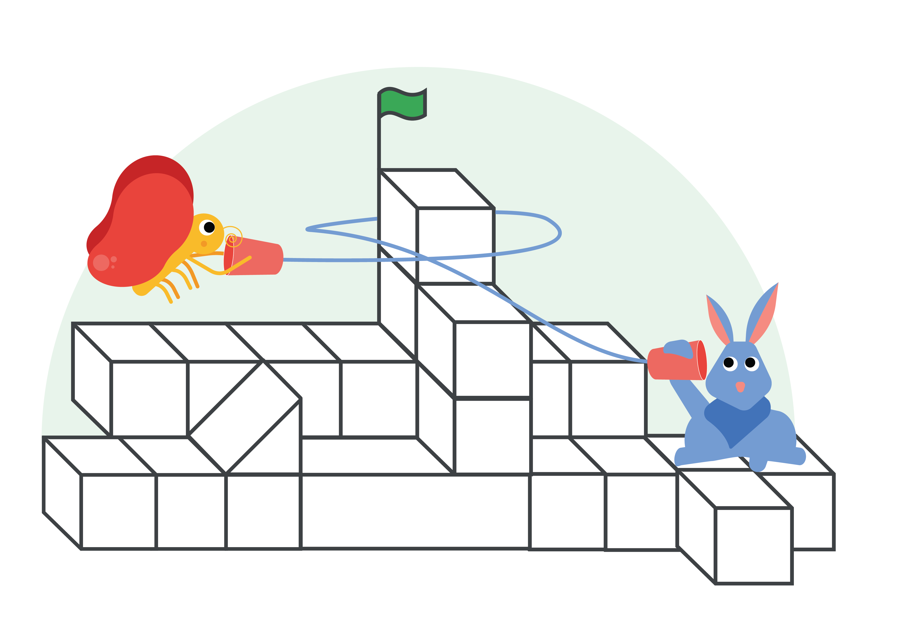

I am offering virtual Zoom coding classes because I am passionate about the importance of new technologies and how it can help improve people's lives. Plus, it's just fun to figure out how to make the code work.
Check out some classes below and Sign Up Here.
| Intro to Scratch Programming | Intro to Scratch Programming | Intro to Scratch Programming |
|---|---|---|
| "Code Your Hero" | "Dialogue" | "An Unusual Discovery" |
|  |
Once the students are familiar with Scratch and the CS First curriculum, they can complete other hands-on activities in their own time.
Once you have signed up, I will email you the Zoom invite at least a day before the class begins.
This is an introduction to the programming language of Scratch. "Code Your Hero" will concentrate on how a character can be programmed to move and how to add sounds through coding.
Scratch is a visual programming language that allows students to create their own interactive stories, games and animations.
You will learn basic programming concepts such as:
We will cover three topics:
Sign-in to CS First as "Student" using the class code "skxwhf" and create your student account.
Computers are everywhere and technology is becoming very important. Unfortunately, only 47% of all high schools teach computer science today.
The good news is, we're on our way to change this! If you've heard about the Hour of Code before, you might know it made history - more than 100 million students around the world have tried an Hour of Code. Even leaders like President Obama and Canadian Prime Minister Justin Trudeau wrote their first lines of code as part of the campaign.
To help, I offer free virtual Zoom programming lessons to other students with the hope that they'll become familiar with technology in their early years and may also decide to help teach others in the world.
The students will create their own apps or games that they can show their parents afterwards, and we'll also print an Hour of Code certificate for them to keep. And, it's fun! With interactive, hands-on activities, students will learn computational thinking skills in an enjoyable way.
While the class content is targeted towards elementary school age (1st-5th grade), the whole family is welcome to join.